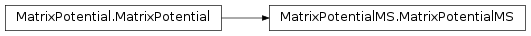

<!DOCTYPE html PUBLIC "-//W3C//DTD XHTML 1.0 Transitional//EN"
  "http://www.w3.org/TR/xhtml1/DTD/xhtml1-transitional.dtd">


<html xmlns="http://www.w3.org/1999/xhtml">
  <head>
    <meta http-equiv="Content-Type" content="text/html; charset=utf-8" />
    
    <title>MatrixPotentialMS &mdash; WaveBlocks devel documentation</title>
    
    <link rel="stylesheet" href="../_static/default.css" type="text/css" />
    <link rel="stylesheet" href="../_static/pygments.css" type="text/css" />
    
    <script type="text/javascript">
      var DOCUMENTATION_OPTIONS = {
        URL_ROOT:    '../',
        VERSION:     'devel',
        COLLAPSE_INDEX: false,
        FILE_SUFFIX: '.html',
        HAS_SOURCE:  true
      };
    </script>
    <script type="text/javascript" src="../_static/jquery.js"></script>
    <script type="text/javascript" src="../_static/underscore.js"></script>
    <script type="text/javascript" src="../_static/doctools.js"></script>
    <link rel="top" title="WaveBlocks devel documentation" href="../index.html" />
    <link rel="next" title="PotentialLibrary" href="PotentialLibrary.html" />
    <link rel="prev" title="MatrixPotential2S" href="MatrixPotential2S.html" /> 
  </head>
  <body>
    <div class="related">
      <h3>Navigation</h3>
      <ul>
        <li class="right" style="margin-right: 10px">
          <a href="../genindex.html" title="General Index"
             accesskey="I">index</a></li>
        <li class="right" >
          <a href="../py-modindex.html" title="Python Module Index"
             >modules</a> |</li>
        <li class="right" >
          <a href="PotentialLibrary.html" title="PotentialLibrary"
             accesskey="N">next</a> |</li>
        <li class="right" >
          <a href="MatrixPotential2S.html" title="MatrixPotential2S"
             accesskey="P">previous</a> |</li>
        <li><a href="../index.html">WaveBlocks devel documentation</a> &raquo;</li> 
      </ul>
    </div>  

    <div class="document">
      <div class="documentwrapper">
        <div class="bodywrapper">
          <div class="body">
            
  <div class="section" id="matrixpotentialms">
<h1>MatrixPotentialMS<a class="headerlink" href="#matrixpotentialms" title="Permalink to this headline">¶</a></h1>
<div class="section" id="module-WaveBlocks">
<span id="about-the-matrixpotentialms-class"></span><h2>About the <tt class="docutils literal"><span class="pre">MatrixPotentialMS</span></tt> class<a class="headerlink" href="#module-WaveBlocks" title="Permalink to this headline">¶</a></h2>
<p>The WaveBlocks Project</p>
<p>&#64;author: R. Bourquin
&#64;copyright: Copyright (C) 2010, 2011, 2012 R. Bourquin
&#64;license: Modified BSD License</p>
</div>
<div class="section" id="inheritance-diagram">
<h2>Inheritance diagram<a class="headerlink" href="#inheritance-diagram" title="Permalink to this headline">¶</a></h2>
<p class="graphviz">

<map id="inheritance1ce63c1ccb" name="inheritance1ce63c1ccb">
<area shape="rect" id="node1" title="This class represents a potential $V\ofs{x}$. The potential is given as an analytic" alt="" coords="5,5,221,31"/>
<area shape="rect" id="node2" title="This class represents a matrix potential $V\ofs{x}$. The potential is given as an analytical" alt="" coords="269,5,525,31"/>
</map>
</p>
</div>
<div class="section" id="class-documentation">
<h2>Class documentation<a class="headerlink" href="#class-documentation" title="Permalink to this headline">¶</a></h2>
<dl class="class">
<dt id="WaveBlocks.MatrixPotentialMS">
<em class="property">class </em><tt class="descclassname">WaveBlocks.</tt><tt class="descname">MatrixPotentialMS</tt><big>(</big><em>expression</em>, <em>variables</em><big>)</big><a class="headerlink" href="#WaveBlocks.MatrixPotentialMS" title="Permalink to this definition">¶</a></dt>
<dd><p>This class represents a matrix potential $Vofs{x}$. The potential is given as an analytical
expression with a matrix of size bigger than $2     imes 2$. Some calculations
with the potential are supported. For example calculation of eigenvalues and
exponentials and numerical evaluation. Further, there are methods for
splitting the potential into a Taylor expansion and for basis transformations
between canonical and eigenbasis. All methods use numerical techniques because
symbolical calculations are unfeasible.</p>
<dl class="method">
<dt id="WaveBlocks.MatrixPotentialMS.calculate_eigenvalues">
<tt class="descname">calculate_eigenvalues</tt><big>(</big><big>)</big><a class="headerlink" href="#WaveBlocks.MatrixPotentialMS.calculate_eigenvalues" title="Permalink to this definition">¶</a></dt>
<dd><p>Calculate the eigenvalues $lambda_iofs{x}$ of the potential $Vofs{x}$.
We do the calculations with numerical tools. The multiplicities are taken
into account.
&#64;note: Note: the eigenvalues are memoized for later reuse.</p>
</dd></dl>

<dl class="method">
<dt id="WaveBlocks.MatrixPotentialMS.calculate_eigenvectors">
<tt class="descname">calculate_eigenvectors</tt><big>(</big><big>)</big><a class="headerlink" href="#WaveBlocks.MatrixPotentialMS.calculate_eigenvectors" title="Permalink to this definition">¶</a></dt>
<dd><p>Calculate the two eigenvectors $nu_iofs{x}$ of the potential $Vofs{x}$.
We do the calculations with numerical tools.
&#64;note: The eigenvectors are memoized for later reuse.</p>
</dd></dl>

<dl class="method">
<dt id="WaveBlocks.MatrixPotentialMS.calculate_exponential">
<tt class="descname">calculate_exponential</tt><big>(</big><em>factor=1</em><big>)</big><a class="headerlink" href="#WaveBlocks.MatrixPotentialMS.calculate_exponential" title="Permalink to this definition">¶</a></dt>
<dd><p>Calculate the matrix exponential $E = expofs{lpha M}$. In the case where
the matrix is of size bigger than $2    imes 2$ symbolical calculations become
unfeasible. We use numerical approximations to determine the matrix exponential.
&#64;keyword factor: A prefactor $lpha$ in the exponential.</p>
</dd></dl>

<dl class="method">
<dt id="WaveBlocks.MatrixPotentialMS.calculate_hessian">
<tt class="descname">calculate_hessian</tt><big>(</big><big>)</big><a class="headerlink" href="#WaveBlocks.MatrixPotentialMS.calculate_hessian" title="Permalink to this definition">¶</a></dt>
<dd><p>Calculate the hessian matrix for each component $V_{i,j}$ of the potential.
For potentials which depend only one variable $x$, this equals the second derivative.</p>
</dd></dl>

<dl class="method">
<dt id="WaveBlocks.MatrixPotentialMS.calculate_jacobian">
<tt class="descname">calculate_jacobian</tt><big>(</big><big>)</big><a class="headerlink" href="#WaveBlocks.MatrixPotentialMS.calculate_jacobian" title="Permalink to this definition">¶</a></dt>
<dd><p>Calculate the jacobian matrix for each component $V_{i,j}$ of the potential.
For potentials which depend only one variable $x$, this equals the first derivative.</p>
</dd></dl>

<dl class="method">
<dt id="WaveBlocks.MatrixPotentialMS.calculate_local_quadratic">
<tt class="descname">calculate_local_quadratic</tt><big>(</big><em>diagonal_component=None</em><big>)</big><a class="headerlink" href="#WaveBlocks.MatrixPotentialMS.calculate_local_quadratic" title="Permalink to this definition">¶</a></dt>
<dd><p>Calculate the local quadratic approximation matrix $U$ of the potential&#8217;s
eigenvalues in $Lambda$. This function can be used for the homogeneous case
and takes into account the leading component $chi$.
If the parameter $chi$ is not given, calculate the local quadratic approximation
matrix $U$ of all the potential&#8217;s eigenvalues in $Lambda$. This function is used
for the inhomogeneous case.
&#64;param diagonal_component: Specifies the index $i$ of the eigenvalue $lambda_i$
that gets expanded into a Taylor series $u_i$.</p>
</dd></dl>

<dl class="method">
<dt id="WaveBlocks.MatrixPotentialMS.calculate_local_remainder">
<tt class="descname">calculate_local_remainder</tt><big>(</big><em>diagonal_component=None</em><big>)</big><a class="headerlink" href="#WaveBlocks.MatrixPotentialMS.calculate_local_remainder" title="Permalink to this definition">¶</a></dt>
<dd><p>Calculate the non-quadratic remainder matrix $W$ of the quadratic
approximation matrix $U$ of the potential&#8217;s eigenvalue matrix $Lambda$.
This function is used for the homogeneous case and takes into account the
leading component $chi$.
&#64;param diagonal_component: Specifies the index $chi$ of the leading component $lambda_chi$.</p>
</dd></dl>

<dl class="method">
<dt id="WaveBlocks.MatrixPotentialMS.evaluate_at">
<tt class="descname">evaluate_at</tt><big>(</big><em>nodes</em>, <em>component=None</em>, <em>as_matrix=True</em><big>)</big><a class="headerlink" href="#WaveBlocks.MatrixPotentialMS.evaluate_at" title="Permalink to this definition">¶</a></dt>
<dd><p>Evaluate the potential matrix elementwise at some given grid nodes $gamma$.
&#64;param nodes: The grid nodes $gamma$ we want to evaluate the potential at.
&#64;keyword component: The component $V_{i,j}$ that gets evaluated or &#8216;None&#8217; to evaluate all.
&#64;keyword as_matrix: Returns the whole matrix $Lambda$ instead of only a list with the eigenvalues $lambda_i$.
&#64;return: A list with the $N^2$ entries evaluated at the nodes.</p>
</dd></dl>

<dl class="method">
<dt id="WaveBlocks.MatrixPotentialMS.evaluate_eigenvalues_at">
<tt class="descname">evaluate_eigenvalues_at</tt><big>(</big><em>nodes</em>, <em>component=None</em>, <em>as_matrix=False</em><big>)</big><a class="headerlink" href="#WaveBlocks.MatrixPotentialMS.evaluate_eigenvalues_at" title="Permalink to this definition">¶</a></dt>
<dd><p>Evaluate the eigenvalues $lambda_iofs{x}$ at some grid nodes $gamma$.
&#64;param nodes: The grid nodes $gamma$ we want to evaluate the eigenvalues at.
&#64;keyword component: The index $i$ of the eigenvalue $lambda_i$ that gets evaluated.
&#64;keyword as_matrix: Returns the whole matrix $Lambda$ instead of only a list with the eigenvalues $lambda_i$.
&#64;return: A sorted list with $N$ entries for all the eigenvalues evaluated at the nodes. Or a
single value if a component was specified.</p>
</dd></dl>

<dl class="method">
<dt id="WaveBlocks.MatrixPotentialMS.evaluate_eigenvectors_at">
<tt class="descname">evaluate_eigenvectors_at</tt><big>(</big><em>nodes</em><big>)</big><a class="headerlink" href="#WaveBlocks.MatrixPotentialMS.evaluate_eigenvectors_at" title="Permalink to this definition">¶</a></dt>
<dd><p>Evaluate the eigenvectors $nu_iofs{x}$ at some grid nodes $gamma$.
&#64;param nodes: The grid nodes $gamma$ we want to evaluate the eigenvectors at.
&#64;return: A list with the $N$ eigenvectors evaluated at the given nodes.</p>
</dd></dl>

<dl class="method">
<dt id="WaveBlocks.MatrixPotentialMS.evaluate_exponential_at">
<tt class="descname">evaluate_exponential_at</tt><big>(</big><em>nodes</em><big>)</big><a class="headerlink" href="#WaveBlocks.MatrixPotentialMS.evaluate_exponential_at" title="Permalink to this definition">¶</a></dt>
<dd><p>Evaluate the exponential of the potential matrix $V$ at some grid nodes $gamma$.
For matrices of size $&gt; 2$ we do completely numerical exponentation.
&#64;param nodes: The grid nodes $gamma$ we want to evaluate the exponential at.
&#64;return: The numerical approximation of the matrix exponential at the given grid nodes.</p>
</dd></dl>

<dl class="method">
<dt id="WaveBlocks.MatrixPotentialMS.evaluate_hessian_at">
<tt class="descname">evaluate_hessian_at</tt><big>(</big><em>nodes</em>, <em>component=None</em><big>)</big><a class="headerlink" href="#WaveBlocks.MatrixPotentialMS.evaluate_hessian_at" title="Permalink to this definition">¶</a></dt>
<dd><dl class="docutils">
<dt>Evaluate the hessian at some grid nodes $gamma$ for each component</dt>
<dd>$V_{i,j}$ of the potential.
&#64;param nodes: The grid nodes $gamma$ the hessian gets evaluated at.
&#64;keyword component: The index tuple $left(i,j</dd>
<dt>ight)$ that specifies</dt>
<dd>the potential&#8217;s entry of which the hessian is evaluated. (Or &#8216;None&#8217; to evaluate all)
&#64;return: Either a list or a single value depending on the optional parameters.</dd>
</dl>
</dd></dl>

<dl class="method">
<dt id="WaveBlocks.MatrixPotentialMS.evaluate_jacobian_at">
<tt class="descname">evaluate_jacobian_at</tt><big>(</big><em>nodes</em>, <em>component=None</em><big>)</big><a class="headerlink" href="#WaveBlocks.MatrixPotentialMS.evaluate_jacobian_at" title="Permalink to this definition">¶</a></dt>
<dd><dl class="docutils">
<dt>Evaluate the jacobian at some grid nodes $gamma$ for each component</dt>
<dd>$V_{i,j}$ of the potential.
&#64;param nodes: The grid nodes $gamma$ the jacobian gets evaluated at.
&#64;keyword component: The index tuple $left(i,j</dd>
<dt>ight)$ that specifies</dt>
<dd>the potential&#8217;s entry of which the jacobian is evaluated. (Defaults to &#8216;None&#8217; to evaluate all)
&#64;return: Either a list or a single value depending on the optional parameters.</dd>
</dl>
</dd></dl>

<dl class="method">
<dt id="WaveBlocks.MatrixPotentialMS.evaluate_local_quadratic_at">
<tt class="descname">evaluate_local_quadratic_at</tt><big>(</big><em>nodes</em>, <em>diagonal_component</em><big>)</big><a class="headerlink" href="#WaveBlocks.MatrixPotentialMS.evaluate_local_quadratic_at" title="Permalink to this definition">¶</a></dt>
<dd><p>Numerically evaluate the local quadratic approximation matrix $U$ of
the potential&#8217;s eigenvalues in $Lambda$ at the given grid nodes $gamma$.
&#64;param nodes: The grid nodes $gamma$ we want to evaluate the quadratic approximation at.
&#64;param diagonal_component: Specifies the index $i$ of the eigenvalue $lambda_i$
that gets expanded into a Taylor series $u_i$.
&#64;return: A list of arrays or a single array containing the values of $U_{i,j}$ at the nodes $gamma$.</p>
</dd></dl>

<dl class="method">
<dt id="WaveBlocks.MatrixPotentialMS.evaluate_local_remainder_at">
<tt class="descname">evaluate_local_remainder_at</tt><big>(</big><em>position</em>, <em>nodes</em>, <em>diagonal_component=None</em>, <em>component=None</em><big>)</big><a class="headerlink" href="#WaveBlocks.MatrixPotentialMS.evaluate_local_remainder_at" title="Permalink to this definition">¶</a></dt>
<dd><dl class="docutils">
<dt>Numerically evaluate the non-quadratic remainder matrix $W$ of the quadratic</dt>
<dd>approximation matrix $U$ of the potential&#8217;s eigenvalues in $Lambda$ at the
given nodes $gamma$. This function is used for the homogeneous and the
inhomogeneous case and just evaluates the remainder matrix $W$.
&#64;param position: The point $q$ where the Taylor series is computed.
&#64;param nodes: The grid nodes $gamma$ we want to evaluate the potential at.
&#64;keyword component: The component $left(i,j</dd>
<dt>ight)$ of the remainder matrix $W$</dt>
<dd>that is evaluated.
&#64;return: A list with a single entry consisting of an array containing the
values of $W$ at the nodes $gamma$.</dd>
</dl>
</dd></dl>

<dl class="method">
<dt id="WaveBlocks.MatrixPotentialMS.get_number_components">
<tt class="descname">get_number_components</tt><big>(</big><big>)</big><a class="headerlink" href="#WaveBlocks.MatrixPotentialMS.get_number_components" title="Permalink to this definition">¶</a></dt>
<dd><p>&#64;return: The number $N$ of components the potential supports. This is
also the size of the matrix.</p>
</dd></dl>

<dl class="attribute">
<dt id="WaveBlocks.MatrixPotentialMS.potential">
<tt class="descname">potential</tt><em class="property"> = None</em><a class="headerlink" href="#WaveBlocks.MatrixPotentialMS.potential" title="Permalink to this definition">¶</a></dt>
<dd><p>The matrix of the potential $Vofs{x}$.</p>
</dd></dl>

<dl class="method">
<dt id="WaveBlocks.MatrixPotentialMS.project_to_canonical">
<tt class="descname">project_to_canonical</tt><big>(</big><em>nodes</em>, <em>values</em>, <em>basis=None</em><big>)</big><a class="headerlink" href="#WaveBlocks.MatrixPotentialMS.project_to_canonical" title="Permalink to this definition">¶</a></dt>
<dd><dl class="docutils">
<dt>Project a given vector from the potential&#8217;s eigenbasis to the canonical basis.</dt>
<dd>&#64;param nodes: The grid nodes $gamma$ for the pointwise transformation.
&#64;param values: The list of vectors $</dd>
<dt>arphi_i$ containing the values we want to transform.</dt>
<dd>&#64;keyword basis: A list of basis vectors $nu_i$. Allows to use this function for external data, similar to a static function.
&#64;return: Returned is another list containing the projection of the values into the eigenbasis.</dd>
</dl>
</dd></dl>

<dl class="method">
<dt id="WaveBlocks.MatrixPotentialMS.project_to_eigen">
<tt class="descname">project_to_eigen</tt><big>(</big><em>nodes</em>, <em>values</em>, <em>basis=None</em><big>)</big><a class="headerlink" href="#WaveBlocks.MatrixPotentialMS.project_to_eigen" title="Permalink to this definition">¶</a></dt>
<dd><p>Project a given vector from the canonical basis to the eigenbasis of the potential.
&#64;param nodes: The grid nodes $gamma$ for the pointwise transformation.
&#64;param values: The list of vectors $phi_i$ containing the values we want to transform.
&#64;keyword basis: A list of basisvectors $nu_i$. Allows to use this function for external data, similar to a static function.
&#64;return: Returned is another list containing the projection of the values into the eigenbasis.</p>
</dd></dl>

<dl class="attribute">
<dt id="WaveBlocks.MatrixPotentialMS.x">
<tt class="descname">x</tt><em class="property"> = None</em><a class="headerlink" href="#WaveBlocks.MatrixPotentialMS.x" title="Permalink to this definition">¶</a></dt>
<dd><p>The variable $x$ that represents position space.</p>
</dd></dl>

</dd></dl>

</div>
</div>


          </div>
        </div>
      </div>
      <div class="sphinxsidebar">
        <div class="sphinxsidebarwrapper">
  <h3><a href="../index.html">Table Of Contents</a></h3>
  <ul>
<li><a class="reference internal" href="#">MatrixPotentialMS</a><ul>
<li><a class="reference internal" href="#module-WaveBlocks">About the <tt class="docutils literal"><span class="pre">MatrixPotentialMS</span></tt> class</a></li>
<li><a class="reference internal" href="#inheritance-diagram">Inheritance diagram</a></li>
<li><a class="reference internal" href="#class-documentation">Class documentation</a></li>
</ul>
</li>
</ul>

  <h4>Previous topic</h4>
  <p class="topless"><a href="MatrixPotential2S.html"
                        title="previous chapter">MatrixPotential2S</a></p>
  <h4>Next topic</h4>
  <p class="topless"><a href="PotentialLibrary.html"
                        title="next chapter">PotentialLibrary</a></p>
  <h3>This Page</h3>
  <ul class="this-page-menu">
    <li><a href="../_sources/waveblocks_classes/MatrixPotentialMS.txt"
           rel="nofollow">Show Source</a></li>
  </ul>
<div id="searchbox" style="display: none">
  <h3>Quick search</h3>
    <form class="search" action="../search.html" method="get">
      <input type="text" name="q" />
      <input type="submit" value="Go" />
      <input type="hidden" name="check_keywords" value="yes" />
      <input type="hidden" name="area" value="default" />
    </form>
    <p class="searchtip" style="font-size: 90%">
    Enter search terms or a module, class or function name.
    </p>
</div>
<script type="text/javascript">$('#searchbox').show(0);</script>
        </div>
      </div>
      <div class="clearer"></div>
    </div>
    <div class="related">
      <h3>Navigation</h3>
      <ul>
        <li class="right" style="margin-right: 10px">
          <a href="../genindex.html" title="General Index"
             >index</a></li>
        <li class="right" >
          <a href="../py-modindex.html" title="Python Module Index"
             >modules</a> |</li>
        <li class="right" >
          <a href="PotentialLibrary.html" title="PotentialLibrary"
             >next</a> |</li>
        <li class="right" >
          <a href="MatrixPotential2S.html" title="MatrixPotential2S"
             >previous</a> |</li>
        <li><a href="../index.html">WaveBlocks devel documentation</a> &raquo;</li> 
      </ul>
    </div>
    <div class="footer">
        &copy; Copyright 2015, R. Bourquin.
      Created using <a href="http://sphinx-doc.org/">Sphinx</a> 1.2.3.
    </div>
  </body>
</html>